HelloWorld
下面将以一个HelloWorld为例，介绍如何使用UI设计工具，以及如何使用UI设计工具生成代码，并实现仿真。
新建项目
在下载好模板和内核后，打开UI设计工具，新建一个项目。依次选择对应的内核、模板、板子，填写项目信息，并创建一个HelloWorld工程。
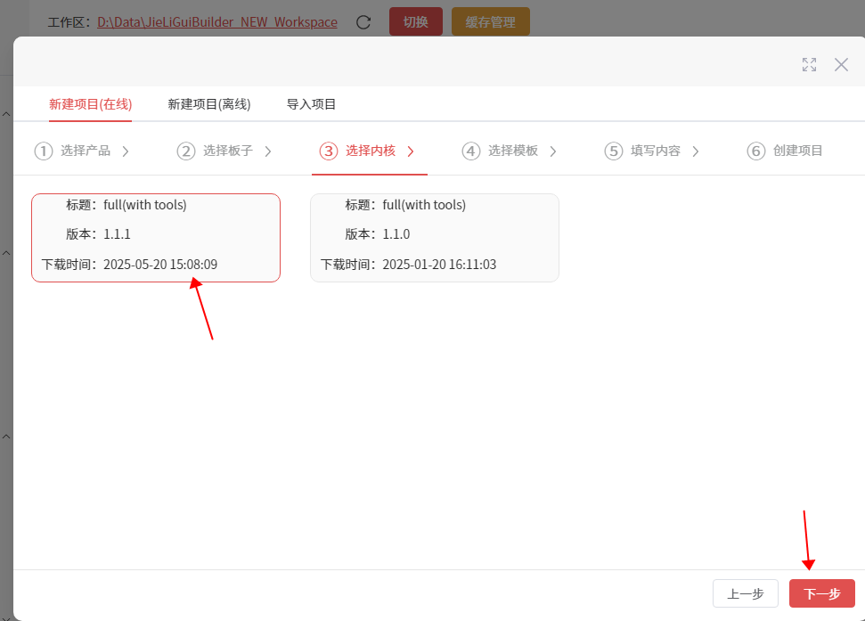
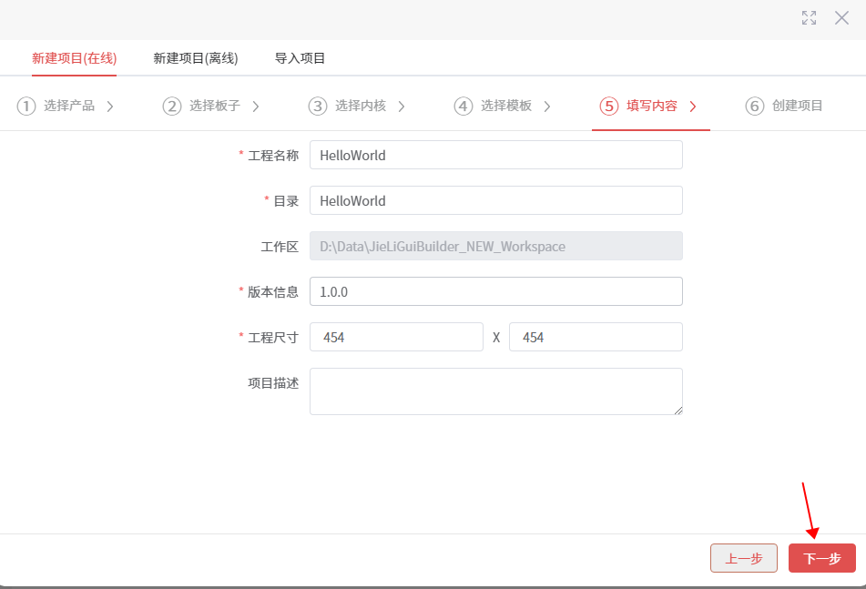
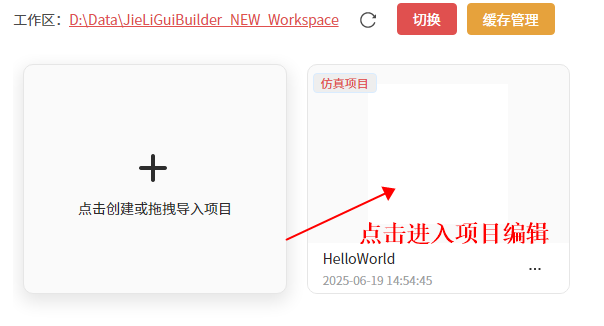
打开项目
与常见的IDE布局类似，都具有顶部的菜单栏、快捷工具栏。右上角的账号登录。侧边栏是页面管理和控件列表。中间是画布，对控件的可视化拖拉编辑就在此完成。右边侧边栏就是控件浏览器和属性配置。
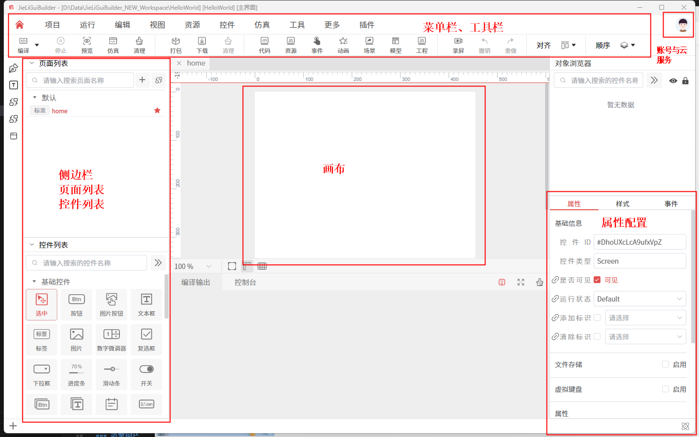
新建页面
新建一个 page1 页面，用于后续实现页面跳转
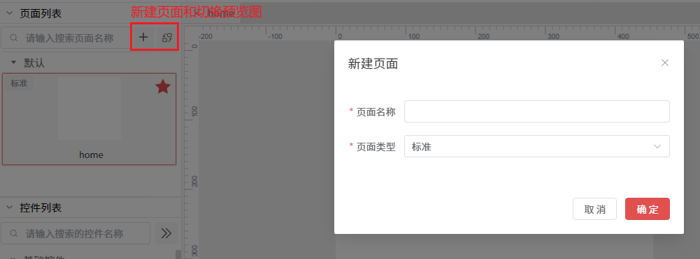
拖拉控件
- 在 home 页面拖拉一个按钮，用于跳转到 page1 页面。
- 在 home 页面拖拉一个文本，用于显示文本内容。
- 在 home 页面拖拉一个图片控件，用于显示图片。
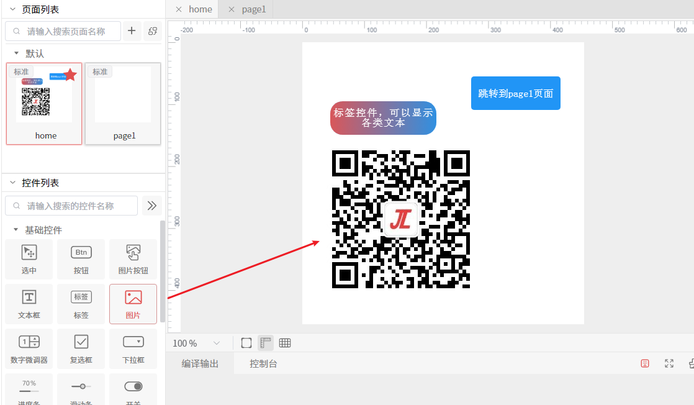
修改属性
（注意选中控件再修改）
修改文本
- 修改文本，由于部分字体是不包含中文的，因此需要配置对应控件的字体和字号
- 在属性里配置文本
- 在样式里进行配置字体字号
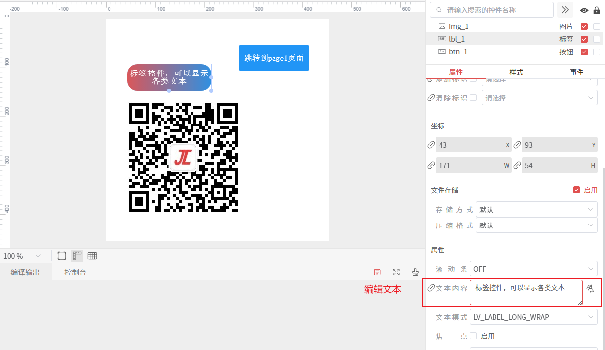
没有配置字体时，默认的 montserratMedium 是不包含中文的，因此无法显示。
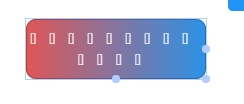
修改字体，如simsun宋体
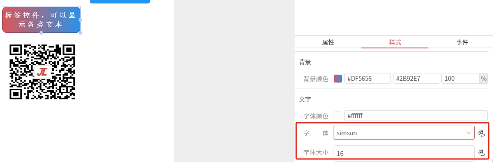
修改坐标
拖拉修改坐标、拖动修改大小
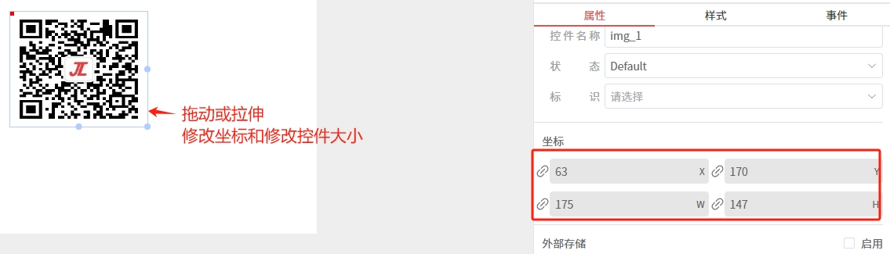
设置图片
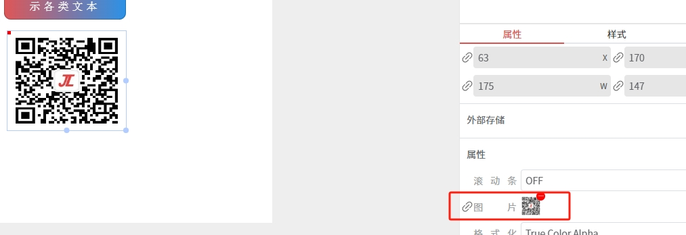
修改样式
修改颜色、边框
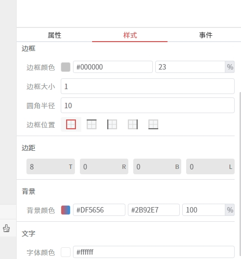
修改字体、大小
增加事件
设置点击事件
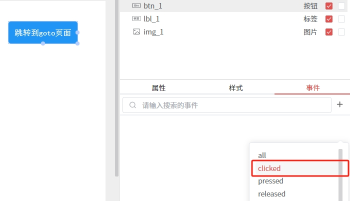
设置页面跳转
设置页面跳转，将目标对象选择 goto 页面，然后启用 加载页面，配置如下
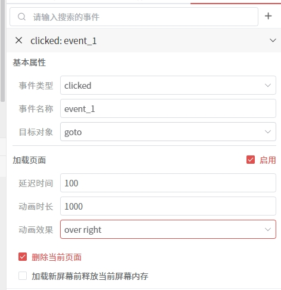
自定义代码
比如为标签控件增加一个click事件，并在事件的自定义启用代码功能，并在弹框的界面上写上 printf("HelloWorld\n");
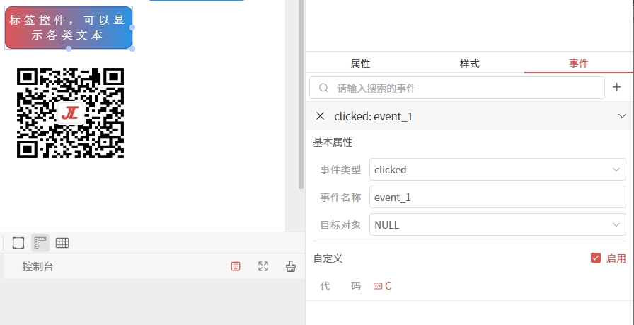
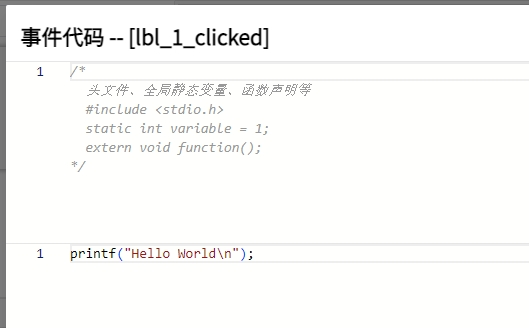
仿真
编译
完成以上操作后，可以点击工具栏上的 编译 按钮，对工程进行编译，并查看下方的编译输出，如果有错误或者提示，都会在这个地方打印。
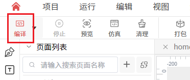
第一次编译会编译比较久。编译错误时，会进行提示
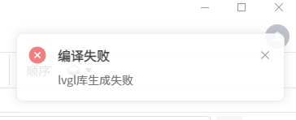
编译成功
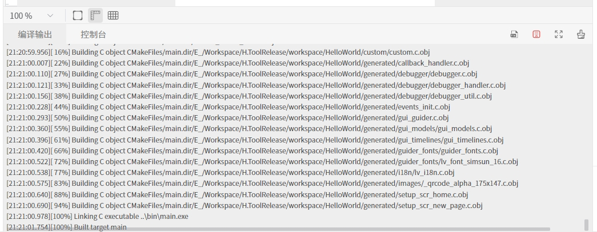
运行仿真程序
点击 预览 或 仿真 按钮，即可对程序进行仿真预览
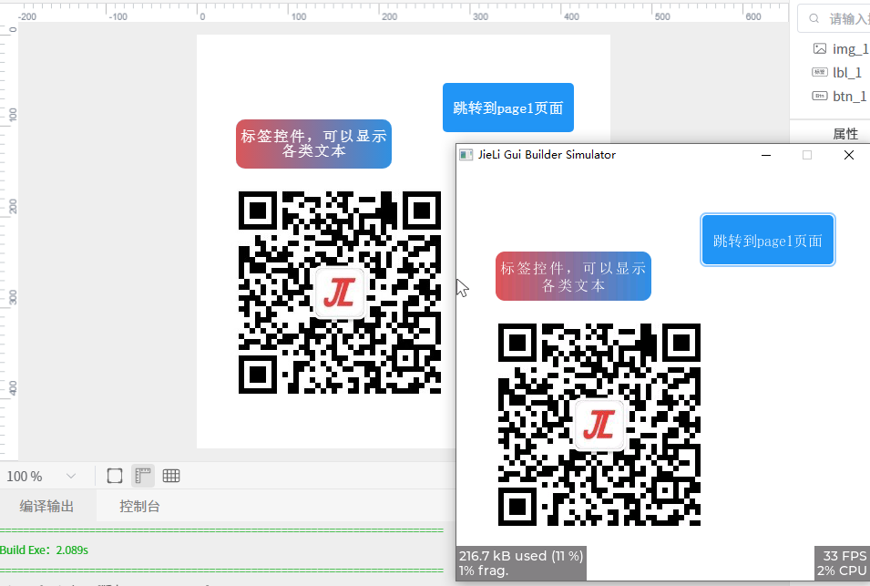
对标签控件增加 ClickAble 标识，然后在仿真程序上，点击标签后，会在控制台打印Hello World。 点击 按钮，也会跳转到 new_page 页面。
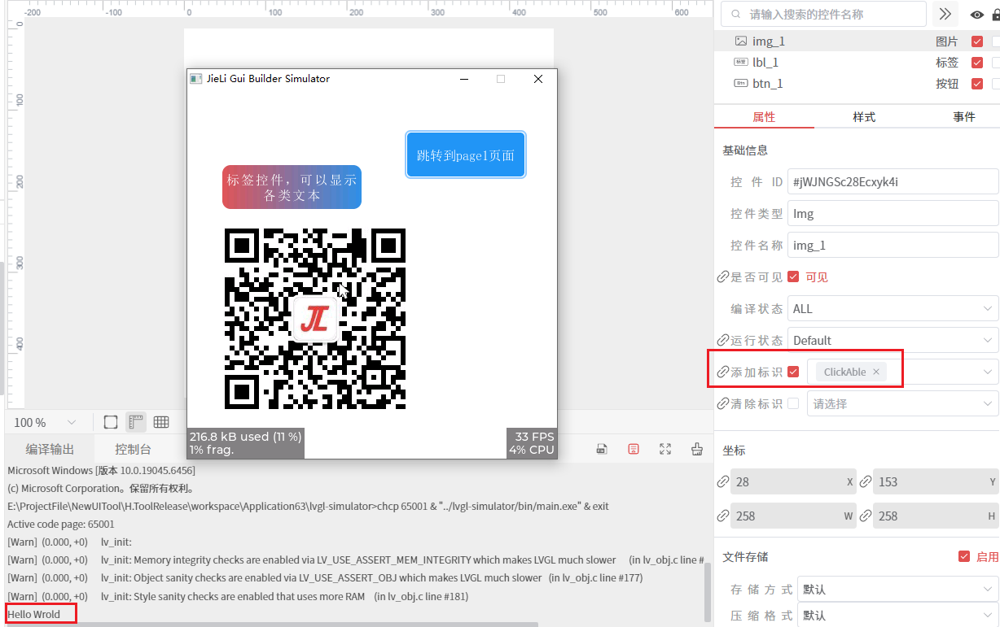
至此，HelloWorld项目就演示完成。
项目工具栏介绍
工具栏上的功能按钮
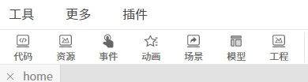
项目属性
【项目】-【项目属性】
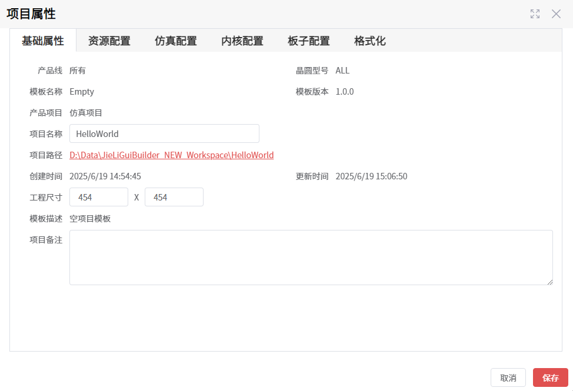
代码查看
【资源】-【代码浏览】
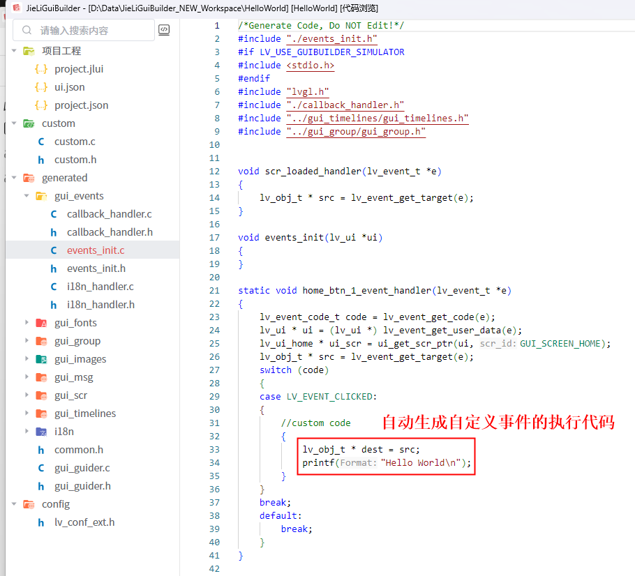
资源管理
【资源】-【资源浏览】
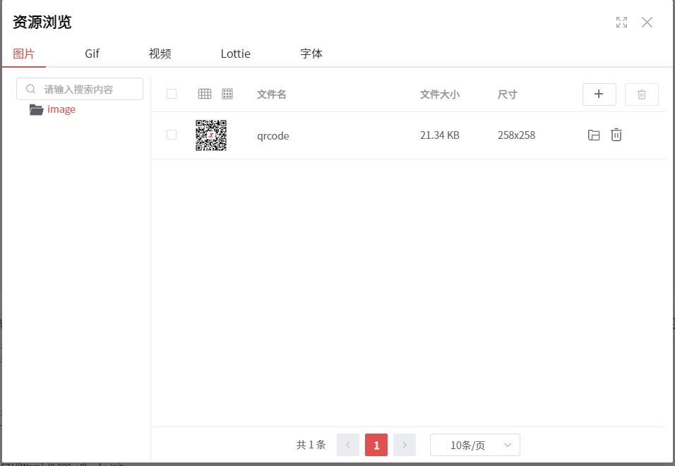
场景管理
【控件】-【场景管理】
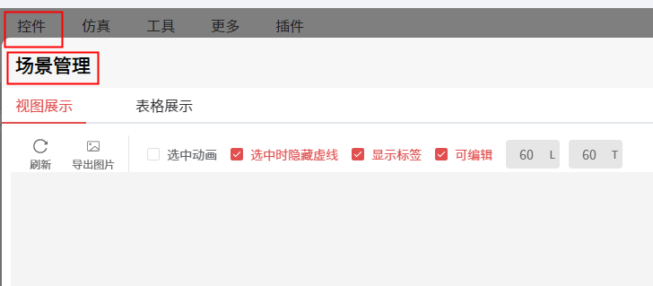